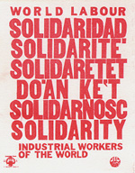
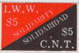
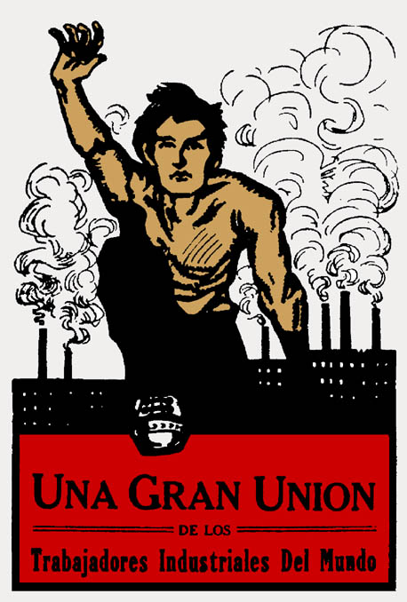

Selected International Solidarity Resolutions

Below are Resolutions passed at IWW past Conventions/General Assemblies.
Thanks to Fellow Worker Robert Rush and Fellow Worker Sparrow for there work compiling this list.
------
1981 - 40th General Assembly
To send greetings to Solidarnosc
The Industrial Workers of the World extends greetings to then people of Poland, and congratulates you on the success in establishing your union, Solidarity. We also commend you on the direct action techniques you have used. Further, we express our desire to maintain contact between our unions.
In Solidarity,
IWW
1983 - 41st Convention
Cortez read a resolution saying that the IWW would support the tourist boycott of Guatemala. It was moved and seconded to approve this resolution. Carlos Cortez said that not much of this tourist money trickles down to the workers. Mike Hargis mentioned the successful example of the Coca Cola boycott around Guatemala. The resolution to support the boycott passed.
1985 43rd Convention
REPORT OF THE CONVENTIONS INTERNATIONAL COMMITTEE
Chicago Branch Resolution #4
“ That the GST send a letter or telegram to the Spanish authorities demanding that they return to the CNT-AIT, (IWA), funds and property stolen by the Francoist regime.”
M/S/C
AMNESTY FOR BRITISH MINERS
“The convention calls for amnesty for the British miners imprisoned or blacklisted for participation in last years coal strike. All IWW branches and groups are encouraged to leaflet or picket British facilities in support of this demand, and to solicit the support and participation of other labor organizations.”
M/S/C
CONDEMNATION OF APARTHEID
“The IWW strongly condemns the apartheid regime in South Africa in particular the suppresion [sic] of the rights of black workers to organize independent unions. Furthermore, we will do everything in our power to support the efforts of workers in South Africa.”
M/S/C
RESOLUTION ON NICARAGUA
“The Industrial Workers of the World reaffirms their support of the Nicaraguan people in their struggle against United States imperialism.
At the same time, the IWW criticises [sic] the Nicaraguan government for its refusal to recognize the autonomous rights of the Indigenous People of eastern Nicaragua, its suppression of independent unions and its denial of womens [sic] rights.”
M/S/C
1986 44th General Assembly
Solidarity With Bolivian Workers Center
“The IWW condemns the Bolivian government's anti-labor policies--in particular the ongoing state of siege, the imprisonment of union activists, the use of the army to suppress strikes and demonstrations, and the decision to shut down many of Bolivia's tin mines throwing tens of thousands of miners out of work. The IWW stands in solidarity with the COB (Bolivian Workers Center) in its resistance to these anti-labor austerity schemes and military union-busting, and fully supports the COB's demand that all US troops currently stationed in Bolivia be immediately withdrawn. We further call for an end to all US military "aid" to Bolivia and urge Bolivia's foreign debt (a major cause of Bolivia's deep economic crisis) be repudiated. We demand the immediate release of all workers arrested in thev recent repression of the labor movement. The GST will send a protest letter to the President of Bolivia.”
motion to approve the resolution was made and carried.
Solidarity With the National Confederation of Labor in Spain
“The IWW strongly protests the Spanish government's most recent attack against our fellow workers of the CNT (National Confederation of Labor)--in particular the recent court ruling denying the CNT the right to use its own name, the continued with-holding of the CNT's patrimony, and governmental efforts to intervene in CNT internal affairs. The IWW reaffirms its fraternal relations with the CNT and the AIT (International Workers Association) to which it is affiliated, and directs the General Secretary-Treasurer to write the Spanish government and courts demanding that this most recent outrage be overturned and that government persecution of, and discrimination against, the CNT be halted. That $70 from General Defense Committee funds be added to CNT assessment funds on hand and immediately forwarded to the CNT to aid in the present crisis. The convention also encourages IWW members to purchase CNT assessment stamps.”
The resolution was approved on voice vote.
Solidarity With South African unionist agianist Apartheid
“IWW condemns the continuing repression directed against South African workers--in particular against the Congress of South African Trade Unions and its activists--and urges transport and communications workers to ban all governmental and corporate traffic with South Africa. That $200 of GDC funds be donated to COSATU to aid in defending class war prisoners.”
resolution was approved on voice vote.
Solidarity with Workers struggling in Communist Eastern Europe
"Whereas, Free trade unions and other political, social, religious, and cultural institutions created by people independent of state intervention or influence are the basic foundation upon which a free and non-exploitative society can be built; and Whereas, The people in communist -party dominated Eastern European countries are struggling to build these institutions in the face of official and unofficial persecution and terror; and Whereas, The dissident peace movements of Eastern Europe that call for cooperation with Western peace movements to establish a nuclear-free, neutral central Europe, offer a practical hope of avoiding a nuclear holocaust and building a free and peaceful Europe; therefore be it Resolved, That the IWW in general convention assembled pledges our full support to the free trade union Solidarity and the Freedom and Peace movement in Poland, the Charter 77 movement in Czechoslovakia, the Moscow Trust group in the Soviet Union, the Bulgarian CNT, and similar movements for a free society in other communist part-dominated countries; and be it further Resolved, That we call upon all IWW members and others who support these principles to do all that they can to aid in the struggle of anti-capitalist Eastern European dissidents, by organizing support for political prisoners and such other means as may be appropriate."
resolution carried on voice vote.
Resolution on Asian Labor Solidarity
"That the GST send letters of support to the United States Government Nurses Union in Sri Lanka and the Textile Garments and Leather Workers Federation of Thailand in support of their strikes of 7000 nurses and 3000 textile workers respectively, and letters of protest to their employers. We further call upon North American workers to boycott Londonfox, Puma, and Adidas garments until the strike in Thailand is resolved."
The resolution as approved on voice vote.
1990 IWW Assembly Minutes
Resolution supporting Mohawk community at Kanesatake
Cortez: Move to Support the Mohawk community at Kanesataka, near Oka, Quebec, in their efforts against Canadian military encroachment upon their lands.
Carried on voice vote.
1991 General Assembly:
Resolution agienst all forms of human Oppression
”The 1991 IWW General Assembly reaffirms the IWW’s opposition to all forms of human oppression, including but not necessarily limited to, those based on race, ethnicity, gender, nationality, creed, age, physical ability, or sexual orientation. Furthermore, we resolve to publish the above statement in the Industrial Worker every month.”
1992 General Assembly

“It is the policy of the IWW to establish contacts with all revolutionary unions around the world. These contacts shall be informal starting through exchange of information, and building according to agreement and cooperation towards solidarity actions and ways of working together...”
A vote to call the question passed. The resolution passed 16 to 5.
1997 General Assembly
International Issues Within the IWW...
- A coffee boycott was urged in solidarity with the Chiapas
2001 General Assembly
Resolution: The IWW and the World Bank
“WHEREAS, THE World Bank controls more investment capital, and together with the International Monetary Fund, has more policy influence in the world economy than any other institution; and
WHEREAS, the World Bank and IMF attempt to restructure economies for the benefit of the employing class, and to produce for export, rather than producing for the needs of the local working class; and
WHEREAS, workers throughout the world resist the implementation of the policies of the World Bank and IMF through general strikes; and
WHEREAS, the World Bank does not respect the rights of workers to organize, and refuses to respect freedom of association; and
WHEREAS, the World Bank promotes policies that lower wages, proliferate sweatshops, and enact repressive labor laws; and
WHEREAS, the development projects of the World Bank are environmentally destructive and in discord with the Earth; and
WHEREAS, the policies of the World Bank aggressively promote privatization of basic public services such as education, health care and water; and
WHEREAS, 80% of the resources controlled by the World Bank come from the sale of World Bank bonds to institutional investors, such as unions and universities, and these resources are used to carry out the aforementioned destructive policies;
THEREFORE, BE IT RESOLVED that the Industrial Workers of the World call for abolition of the World Bank and the International Monetary Fund;
BE IT FURTHER RESOLVED, that the IWW will not purchase bonds issued by the International Bank for Reconstruction and Development (the World Bank). In addition, we call on workers and unions throughout the world to do the same.
BE IT FURTHER RESOLVED, that the IWW calls for an immediate cancellation of all debts owed to the World Bank.
BE IT FURTHER RESOLVED, that the IWW will join protests against the World Bank, and stay in solidarity with the Anti-Capitalist Convergence for protests in Washington, DC. This September and October, 2001”
Resolution Adopted adopted.
2007 General Assembly
Caucus on Proposed Boycott of Israel
“The Caucus reported that it had decided to continue discussions on the issue over the coming year, to research the proposed boycott and the economic and military aid provided by Canada and the U.S. to Israel, and ask the Industrial Worker to publish an article on their findings.”